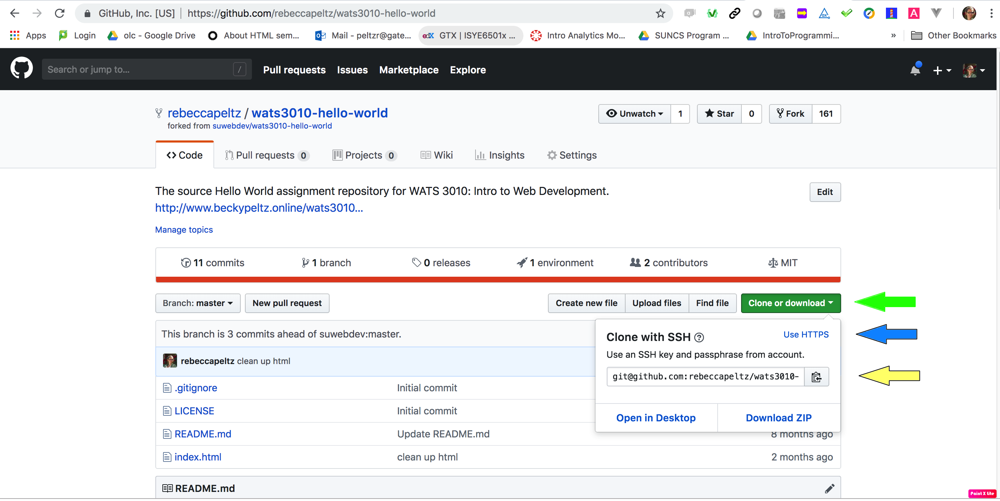
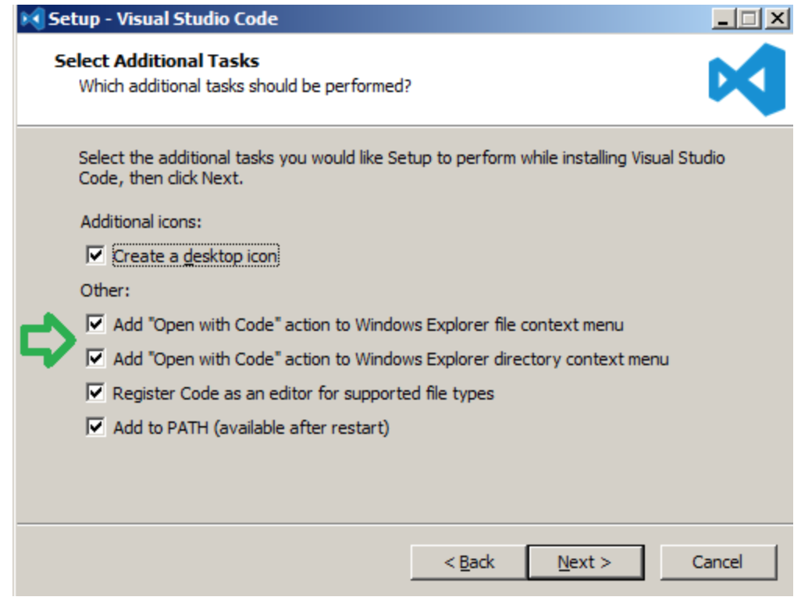

This FAQ answers the question "How to use the Git Command Line?"
This is not an all inclusive document on how to use the Git Command Line. This a quick reference on the command to clone a repo from Github.com and then push changes back to Github.com.
I'm am using a repo, wats3010-hello-world from my account, rebeccapeltz, on Github.com to demonstrate these commands.
The picture below shows that I have clicked on the green button (see green arrow in picture) labeled Clone or Download. I have also clicked on the link labeled "Use SSH" (see blue arrow in the picture). I see an address git@github.com:rebeccapeltz/wats3010- and I have clicked on the copy icon to copy this address into my clipboard (see yellow arrow in the picture).

You can open a command line window in visual studio code or using terminal (Mac) or git bash (Windows with Git installed). From the command line you can navigate to your projects directory (a directory you have created under your home directory) and then issue the clone command by typing clone and then pasting the git address onto the command line.
cd ~/projects
git clone git@github.com:rebeccapeltz/wats3010-hello-world.git
You will see output showing that the code from github.com is being copied down to your local machine.
Push Changes back to Github
After you have made changes to your code and tested to see that they are working as you expect, you will issue the following commands in the root of your project to push the changes back to github. Lines with a # at the start are comments. You only execute the command that start with git below.
# optional check to see the file you have changed they will appear in red
git status
# add the file to the local git repo - you can name each file or use . to specify all files below current
# directory
git add .
# if you issue git status now the files added will be green
# commit the files to the directory and provide a message describing the changes
git commit -m"my changes for this commit"
# if you issue git status now you'll see a notice that you have files to push
# push the files to github.com repo
git push origin master
You might want to commit to memory
git add .
git commit -m"my changes"
git push origin master
If you forget to enter a message for your commit, you'll find that an editor will open. This default editor is VIM which may be unfamiliar to you. For that reason, it a good idea to configure an editor you're familiar with, which would be Visual Studio Code. You only need to do this once.
To configure Visual studio code, make sure that you have this program in your path. You can test this.
code --help
which should show you help output. If it's not in the path you can add it to the path
In VS Code enter CTRL-SHIFT-P to open the Command Pallete and type in Shell Command: Install 'Code' Command in command path
You can check a box during installation to add Code to Windows path. If you didn't do this you can rerun the installation.

Set VS Code as the default editor for Git
Once you've verified that VS code is in the path, you can execute the following command to make it the default editor for Git.
git config --global core.editor "code --wait"
You can test that VS Code is your default editor for git by typing the following command. This will open your machine's ~/.gitconfig file in VS Code. This is a hidden file under your user root that contains all the git configuration settings.
git config --global -e